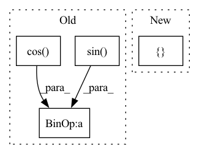

Pattern ID :28984
Before Change
center = np.array([state.x.x, state.x.y])
psi = state.e.psi
R = np.array([[np.cos(psi), -np.sin( psi) ], [np.sin(psi), np.cos( psi) ]])
corners = (R @ vehicle_body.V.T).T
return corners + centerAfter Change
def get_vehicle_corners(state: VehicleState=None, vehicle_body: VehicleBody=None) -> np.ndarray:
state_dict = {}
state_dict["center-x"] = state.x.x
state_dict["center-y"] = state.x.y
state_dict["heading"] = state.e.psi
state_dict["corners"] = vehicle_body.VIn pattern: SUPERPATTERN
Frequency: 3
Non-data size: 4
Instances Fragment ID: 85409909
Project Name: xushenlz/parksim
Commit Name: 48a29c9566bb6ab440c545ae8f0515d001aaaeca
Time: 2022-02-06
Author: lacayomatt@gmail.com
File Name: python/parksim/utils/get_corners.py
M Class Name: AnonimousClass
N Class Name: AnonimousClass
M Method Name: get_vehicle_corners(2)
N Method Name: get_vehicle_corners(2)
M Parent Class:
N Parent Class:
M File Name: python/parksim/utils/get_corners.py
N File Name: python/parksim/utils/get_corners.py
M Start Line: 6
M End Line: 13
N Start Line: 7
N End Line: 13
Before Change
// See paper p13
thetas = torch.arange(self.n_heads, dtype=torch.float32) * (2.0 * math.pi / self.n_heads)
grid_init = torch.stack([thetas.cos(), thetas.sin() , thetas.cos() ], -1) // TODO
// [NumHeads, FeatureLevels, NumPoints, Offset]
grid_init = (grid_init / grid_init.abs().max(-1, keepdim=True)[0]).view(self.n_heads, 1, 1, 3).repeat(1, self.n_levels, self.n_points, 1)
for i in range(self.n_points):
grid_init[:, :, i, :] *= i + 1
After Change
constant_(self.sampling_offsets.weight.data, 0.)
// See paper p13
grid_init = torch.cartesian_prod(torch.tensor([-1, 0, 1]), torch.tensor([-1, 0, 1]), torch.tensor([ -1, 0, 1 Fragment ID: 85409913
Project Name: bwittmann/transoar
Commit Name: fa86cda78f79e61cc6617f73268e684f56636b3f
Time: 2021-12-16
Author: bastian.wittmann@tum.de
File Name: transoar/models/ops/modules/ms_deform_attn.py
M Class Name: MSDeformAttn
N Class Name: MSDeformAttn
M Method Name: _reset_parameters(1)
N Method Name: _reset_parameters(1)
M Parent Class: nn.Module
N Parent Class: nn.Module
M File Name: transoar/models/ops/modules/ms_deform_attn.py
N File Name: transoar/models/ops/modules/ms_deform_attn.py
M Start Line: 66
M End Line: 70
N Start Line: 66
N End Line: 75
Before Change
// Explanation forthcoming
seq_len = t.shape[-2]
freqs = freqs[:, :, -seq_len:]
return (t * freqs.cos() ) + (rotate_half(t) * freqs.sin() )
After Change
frequencies = frequencies[:, :, -seq_len:] // Take the frequencies we need (just up to seq_len)
x_rotate = (x_rotate * frequencies.cos()) + (rotate_half(x_rotate) * frequencies.sin()) // Apply rotation
x = torch.cat([ x_rotate, x_orig Fragment ID: 85409912
Project Name: antofuller/configaformers
Commit Name: c3a00a8d424ad3ee1b05dd8cf0dc58b4c3e2252e
Time: 2021-09-10
Author: afuller187187@gmail.com
File Name: positional_and_masking_utils.py
M Class Name: AnonimousClass
N Class Name: AnonimousClass
M Method Name: apply_rotary_pos_emb(2)
N Method Name: apply_rotary_pos_emb(2)
M Parent Class:
N Parent Class:
M File Name: positional_and_masking_utils.py
N File Name: positional_and_masking_utils.py
M Start Line: 114
M End Line: 119
N Start Line: 123
N End Line: 136